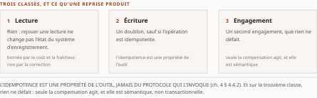
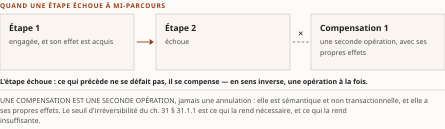

Chapitre 48La sémantique d'effet : idempotence, compensation, réconciliation
Livre V — Livrer et clore : l'agent comme livrable logiciel, horizon et frontière. Premier mouvement — l'agent comme livrable logiciel : provenance, mise en service, sémantique d'effet (ch. 47-48). Second et dernier chapitre du mouvement, et **troisième des trois fronts** de matière neuve que l'audit v0.3 avait nommés puis écartés (décision 9 du TOC)
Thèse réalignée au TOC v0.26 (décisions 8 et 14), sur la remontée R-IV-65 ouverte par cette pièce, et inchangée depuis : le plan est passé en v0.29 puis en v0.30, versions qui déclarent l'une et l'autre n'avoir touché aucune thèse, et la concordance mot à mot de la thèse citée ci-dessus avec l'entrée du ch. 48 du TOC courant a été re-vérifiée le 28 juillet 2026. La forme antérieure écrivait « n'est spécifié ni par les protocoles ni par l'encadrement » — un quantificateur universel négatif qu'aucun balayage ne soutient. Ce que le corpus établit est une absence de documentation, au degré 3 de l'échelle R-14 du Vol. III, et non un fait négatif vérifié. Le corps du chapitre n'a pas changé à la rédaction : il écrivait déjà l'énoncé sous la forme bornée. ⚠ Le chapeau, en revanche, disséquait encore le libellé antérieur ; il est réécrit sur la forme courante au commit du 28 juillet 2026 — un corps qui commente une thèse que sa propre tête ne porte plus fait se contredire la pièce sous les yeux du lecteur qui ne lit pas ce bloc.
Ce bloc était absent du rendu .html jusqu'au 28 juillet 2026, et son emplacement en était la cause : placé entre la thèse et le séparateur, il tombait hors du corps que le générateur projette. Il est déplacé après le séparateur, où les ch. 47 et 49 placent le leur. Le défaut n'était pas un rendu régénéré depuis un état intermédiaire mais une omission silencieuse du générateur : le .md faisait foi et le .html ne le disait pas. ⚠ La dette est d'appareil et elle reste ouverte — un contrôle de parité qui compare les titres de section ne voit pas cette classe, et rien de versionné ne l'attrape aujourd'hui.
La thèse est déclarée construction d'auteur, socle à constituer par le TOC lui-même, et elle porte deux propositions de statuts inégaux qu'il faut séparer avant d'entrer dans le chapitre. La seconde — un virement à moitié réussi est un écart comptable — est une lecture d'auteur, et elle est reprise comme telle. La première — cela n'est documenté par rien de ce que la somme a instruit, ni du côté des protocoles ni du côté de l'encadrement — est une absence, et la forme que la thèse porte depuis son réalignement dit exactement à quoi elle est bornée : ⚠ elle porte sur le corpus instruit par la somme, non sur les protocoles ni sur l'encadrement eux-mêmes. C'est une absence de documentation dans le corpus de la somme, au degré 3 de l'échelle R-14 du Vol. III, non un fait négatif vérifié — et aucun balayage documenté ne l'élève au-dessus de ce degré. ⚠ La borne est désormais dans la thèse, et elle se lit comme une borne, non comme une atténuation de style : le chapitre ne peut pas écrire que les protocoles n'en disent rien ; il écrit que rien de ce que la somme a instruit ne le documente, ce qui n'est pas la même proposition et n'autorise pas la même conclusion.
Un fait neuf du 28 juillet 2026 change ce que ce chapitre pourrait un jour établir, sans rien changer à ce qu'il établit aujourd'hui. Le socle consolidé existe depuis le franchissement de G-3 : pour la première fois, « ce que la somme a instruit » désigne un corpus fini, numéroté et balayable, là où la thèse visait jusqu'ici un objet qu'aucun instrument ne délimitait. Le degré ne bouge pas pour autant — un balayage de chaînes n'est pas un balayage sémantique, et le conduire est un acte d'instruction, non de relecture. ⚠ R-IV-65 offrait deux issues et une seule a été prise : le réalignement de la thèse, ☑ soldé en v0.26 ; le balayage documenté qui l'établirait ne l'a pas été, et il n'était alors conductible sur aucun corpus fini. Il l'est depuis le 28 juillet 2026, et le constat est porté au § 48.6 sans qu'un identifiant de remontée y soit alloué — une passe qui court en parallèle d'autres n'alloue pas dans une série partagée (PRD §13).
§ 48.1Taxonomie des effets d'une action d'agent
SIÈGE DE LA SÉMANTIQUE D'EFFET POUR TOUTE LA SOMME. La matière — idempotence, compensation, réconciliation — est posée ici une seule fois. Le ch. 1 § 1.5.2 et § 1.6.2.2 en posent les fondements au grain pré-agentique et y renvoient ; les ch. 22 § 22.5, ch. 23, ch. 24 et ch. 27 l'appliquent et y renvoient nommément ; aucun de ces chapitres ne la reconstruit. C'est l'économie de la fusion côté « effets d'une action », et elle n'a lieu que si ces chapitres s'y tiennent.
Lecture de l'auteur la taxonomie qui suit est une construction de ce chapitre. Ce que le socle établit : rien — aucune des trois classes ne résout contre une entrée numérotée, ni du socle consolidé, ni d'aucun des trois socles sources. Ce qu'il n'établit pas : que ces trois classes soient les bonnes, qu'elles soient exhaustives, ni qu'une action réelle se rattache à une seule d'entre elles. Elle vaut comme vocabulaire de travail — et son seul mérite est de faire tenir ensemble trois questions que les chapitres amont posent séparément : le rejeu d'un appel d'outil (ch. 4 § 4.4.2), l'annulation sémantique d'une étape engagée (ch. 1 § 1.6.2.2) et la reprise d'une trajectoire interrompue (ch. 22 § 22.5).
| Classe d'effet | Ce qu'une reprise produit | Ce qui la borne | Où la somme en traite |
|---|---|---|---|
| Lecture | rien : rejouer une lecture ne change pas l'état du système d'enregistrement | le coût et la fraîcheur, non la correction | ch. 1 § 1.5.2 (déduplication, condition de version) |
| Écriture | un doublon, sauf si l'opération est idempotente | l'idempotence est une propriété de l'outil, jamais du protocole qui l'invoque (ch. 4 § 4.4.2) | § 48.2 ; ch. 22 § 22.5 (reprise d'un moteur durable) |
| Engagement | un second engagement, que rien ne défait | seule la compensation agit, et elle est sémantique, non transactionnelle | § 48.3 ; § 48.4 pour le cas financier |
Tableau 48.1 — Les trois classes d'effet d'une action d'agent, construction d'auteur du présent chapitre au 27 juillet 2026. Aucune ligne ne résout contre une entrée de socle ; la colonne de droite renvoie aux sièges qui traitent la matière, jamais à une source qui l'établirait.
Ce que la taxonomie fait voir, et c'est le seul point qu'elle établisse : la frontière qui compte n'est pas celle du succès et de l'échec, mais celle de la reprise. Un système qui reprend une trajectoire interrompue rejoue des lectures sans conséquence, des écritures avec conséquence si l'outil n'est pas idempotent, et des engagements qu'aucune reprise ne peut annuler. La question « l'action a-t-elle réussi » est mal posée ; la question opérante est « que produit son rejeu ».
Le fondement de cette distinction est un résultat d'impossibilité, et il est déjà posé. Le ch. 1 § 1.5.2 établit que la livraison exactement-une-fois est irréalisable sous pannes — instance du problème des deux généraux —, et que la voie praticable est le traitement exactement-une-fois, obtenu en combinant une livraison au-moins-une-fois avec un consommateur idempotent. Ce chapitre en tire la conséquence que le ch. 1 lui assigne : si la livraison ne peut être garantie, l'effet doit l'être ; et c'est l'effet, non le message, que la sémantique de ce chapitre prend pour objet.

§ 48.2Idempotence et rejouabilité des appels d'outils
Le plan borne cette section par une formule qu'il faut appliquer à la lettre : « ce que les spécifications protocolaires en disent — à instruire, jamais présumé ». Aucune passe d'instruction protocolaire n'a été conduite pour ce chapitre. Ce qui suit est donc ce que des pièces rédigées de la somme portent déjà, plus l'état de l'absence — jamais une lecture de spécification faite ici.
Ce que la somme porte, et c'est peu mais c'est précis. Le ch. 8 § 8.2.3 établit que les tâches asynchrones du protocole agent-outil sont expérimentales, que le mécanisme se rapproche, sans s'y identifier, de l'exécution durable de l'intégration d'entreprise, et surtout qu'il ne fournit pas les garanties de reprise et d'idempotence d'un moteur durable — leur contrat ne saurait être présenté comme stable. ⚠ C'est un énoncé sur ce que le mécanisme ne démontre pas, et il est repris tel quel : R-02 du Vol. III veut qu'un mécanisme se qualifie par ce que sa spécification démontre, jamais par la parenté qu'on lui prête. Le rapprochement avec un moteur durable est précisément ce que le ch. 8 refuse de tenir pour une équivalence.
Ce que la somme porte du côté de l'outil. Le ch. 4 § 4.4.2 range l'idempotence parmi les propriétés de conception d'un outil — une même requête répétée produit le même état, ce qui protège des réessais et des duplications d'effets de bord. Lecture de l'auteur la conséquence est dissymétrique et elle est le cœur de la section : l'idempotence est une propriété de l'outil invoqué, pas du protocole qui l'invoque, ni de l'agent qui décide de l'invoquer. Ce que le socle établit : la propriété et son intérêt, par le ch. 4. Ce qu'il n'établit pas : qu'un protocole agentique la prescrive, l'exprime dans un champ, ou permette à un appelant de savoir si l'outil qu'il appelle la possède.
L'absence, à son degré exact. Le socle consolidé de la somme ne documente aucune spécification protocolaire prescrivant l'idempotence d'un appel d'outil, ni aucun champ qui la déclarerait — degré 3, absence de documentation dans le corpus de cet ouvrage. Deux bornes accompagnent ce constat, et sans elles il serait faux. (1) Le balayage sur lequel il s'appuie n'a pas été mené pour cette question : le ch. 20 § 20.1 rapporte l'énumération des huit champs du type qui décrit un outil, dont aucun ne porte de version, d'empreinte ni de signature — ce balayage-là portait sur l'intégrité, non sur l'idempotence, et il était borné à une page d'une révision nommée. L'étendre à l'idempotence serait exactement l'élargissement que le contrôle de bornage du Vol. III écarte. (2) ⚠ Une révision majeure du protocole agent-outil est annoncée au brouillon — dont la date n'est pas confirmée à la source (R-09 du Vol. III) — et tout constat de cette section est à rejouer sur la révision publiée : il ne vaut pas par avance pour elle.
Le lot d'instruction, formulé pour qu'il soit ouvrable. Question : une spécification protocolaire agentique prescrit-elle, exprime-t-elle ou permet-elle de déclarer l'idempotence d'une opération invocable, et sous quelle forme un appelant peut-il l'établir avant d'invoquer ? Corpus à ouvrir, ⚠ nommé par ses identifiants et non par des périphrases, faute de quoi le critère de clôture ne serait pas exécutable : les pages de définition d'outil des révisions courantes de MCP (agent-outil) et d'A2A (agent-agent), les deux protocoles dont le ch. 8 tient l'anatomie, dans leur texte intégral ; côté IETF, RFC 9110 (HTTP Semantics, Fielding, Nottingham et Reschke, 2022), qui définit les méthodes idempotentes — ⚠ le document de l'IETF sur les clés de requête (« Idempotency-Key ») n'est nommé par aucune pièce ni par aucune relève du plan : son identifiant est à établir à l'ouverture du lot, et cet établissement en est le premier acte ; les contrats de tâche des moteurs d'exécution durable relevés au ch. 22 § 22.5. Critère de clôture : un champ nommé, ou un énoncé normatif cité et daté, portant l'idempotence d'une opération — non une recommandation de bonne pratique dans une page de guide. Échec documenté : si le corpus n'en porte pas, l'énoncé qui en sort reste au degré 3, et la thèse du chapitre est confirmée dans sa lettre sans être établie — nuance qui doit survivre à l'instruction.
§ 48.3Compensation et sagas au grain de l'agent
Le patron est acquis et ne se reconstruit pas ici. Le ch. 1 § 1.6.2.2 pose la saga — renoncement à l'atomicité globale au profit d'une suite de transactions locales, chacune assortie d'une compensation qui annule sémantiquement son effet —, ses deux variantes orchestrée et chorégraphiée, et le régime de cohérence dans lequel ce renoncement s'inscrit. Le ch. 22 § 22.5 porte l'exécution durable, sa reprise et son rejeu. Ce chapitre applique ; il ne réexpose ni l'un ni l'autre.
Lecture de l'auteur ce que « au grain de l'agent » change, et c'est la seule proposition propre de la section. Une saga classique suppose que l'ensemble des étapes soit connu du concepteur : la compensation de l'étape k est écrite en même temps que l'étape k. Un agent qui compose sa trajectoire à l'exécution — c'est la définition même que le ch. 22 donne de l'orchestration pilotée par un agent générateur de plans — produit des suites d'étapes que personne n'a écrites, donc des suites dont personne n'a écrit les compensations. Ce que le socle établit : le patron et ses variantes (ch. 1 § 1.6.2.2) ; que la trajectoire d'un agent générateur de plans n'est pas fixée à la conception (ch. 22 § 22.5, avec ses niveaux propres). Ce qu'il n'établit pas : qu'un mécanisme de compensation ait été spécifié pour une trajectoire composée à l'exécution, ni qu'un moteur durable en fournisse un. Le socle consolidé ne documente aucun dispositif de compensation dont la portée soit une trajectoire d'agent non fixée à la conception — degré 3.
Deux bornes ferment cette section, et la seconde est une décision d'auteur qu'il est interdit de rouvrir ici.
(1) La compensation n'est pas l'annulation. Elle annule sémantiquement — un remboursement compense un débit, il ne le supprime pas ; les deux écritures subsistent. C'est la formule du ch. 1 § 1.6.2.2, et elle décide de tout le § 48.4 : dans un système d'enregistrement, la compensation laisse une trace, et c'est cette trace que la réconciliation lit.
(2) ⚠ L'accord entre agents sous asynchronie et défaillance partielle n'est pas traité, et cette absence est un périmètre assumé, non un oubli. Le ch. 1 § 1.6.2.2 pose les résultats d'impossibilité au grain pré-agentique et déclare qu'il est le seul endroit de l'ouvrage où ils figurent ; la décision d'auteur D-7, prise le 27 juillet 2026 (risque 15 du TOC), a arbitré la matière en périmètre assumé et déclaré, ce qui ferme les ch. 6, 37 et 48. Y ouvrir une section ne rouvrirait pas ce chapitre : elle rouvrirait la décision. ⚠ Et la conséquence pour le lecteur est celle que le ch. 1 énonce : les architectures inter-institutions que la somme prescrit — maillage inter-domaines, vérification d'agent tiers, rails de paiement — opèrent sous un régime de défaillance que l'ouvrage ne caractérise pas. Un périmètre assumé n'est pas un angle mort résorbé : c'est un angle mort dont le lecteur est prévenu. Le ch. 49 en enregistre l'état final.
Un fait de plan est consigné ici parce qu'il est le motif du risque 15 et qu'il se lit mal ailleurs : cette section est, selon le TOC — v0.25 au constat d'origine, mention reconduite jusqu'à la v0.30 —, la seule occurrence de « sagas » de toute la zone des chapitres, et elle l'est au grain d'une action unique. C'est ce constat, et non une préférence d'architecture, qui a fondé le risque 15 — et D-7 l'a borné sans le combler.

§ 48.4Réconciliation des flux financiers
La thèse place ici le coût maximal du silence, et cette section dit pourquoi — sans pouvoir l'établir. Trois propriétés se cumulent dans un système d'enregistrement financier, et chacune est portée par un renvoi, non par une source de ce chapitre.
Premièrement, l'irréversibilité. Le Vol. I Monographie §5.7.5 traite les paiements temps réel et leur irréversibilité, et son §7.9.3 — repris au ch. 49 § 49.9 — pose que le règlement sur monnaie programmable est sans mécanisme de rétrofacturation, de sorte qu'une erreur d'agent n'y est pas rattrapable a posteriori. ⚠ Les deux entrées sont en [C] : le Vol. I entre au régime le plus faible, sa vérification portant sur ses références et non sur le contenu de ses affirmations (PRD §7.1) — elles corroborent, elles ne portent pas. ⚠ Et une formulation est imposée : le rail temps réel canadien se nomme sans jamais s'écrire « lancé » (réserve F-29 du Vol. II, garde-fou R-4 du même volume — ⚠ le Vol. III porte lui aussi une F-29, sur tout autre objet : la forme nue serait indécidable) ; le ch. 33 en est le siège, et ce chapitre n'en date rien.
Deuxièmement, l'encapsulation. Le Vol. I Monographie §5.7.6 porte la règle invariante selon laquelle aucun agent n'accède en écriture directe au grand livre, la couche d'exposition ne publiant que des capacités bornées et idempotentes — en [C] de nouveau. L'idempotence y est donc une exigence de l'exposition, ce qui rejoint exactement le constat dissymétrique du § 48.2 : la propriété est portée par ce qui expose l'outil, jamais par ce qui l'appelle.
Troisièmement, l'écart comptable. Lecture de l'auteur c'est la seconde proposition de la thèse, et elle est une lecture, non un fait : un virement dont l'ordre est parti et dont la confirmation n'est pas revenue laisse deux systèmes dans deux états, et ce désaccord n'est pas un défaut de supervision, c'est une différence entre deux enregistrements. Ce que le socle établit : l'irréversibilité et l'encapsulation, en [C]. Ce qu'il n'établit pas : qu'un tel écart ait été observé sur un flux agentique, ni qu'un dispositif de réconciliation ait été spécifié pour ce cas. Le socle consolidé ne documente aucun mécanisme de réconciliation dont le périmètre déclaré couvre les effets d'une action d'agent — degré 3.
Trois renvois de cette section portent la matière que le chapitre n'a pas, et leurs trois cibles sont désormais dans le MÊME état — ce qui déplace la réserve sans la lever. Le plan situe les flux ISO 20022 au ch. 33 et au ch. 45 § 45.12, et le trou de responsabilité au ch. 36 § 36.2.6 : ⚠ les trois chapitres sont écrits et committés depuis, hors de cette passe, et aucun n'a été relu par elle — les deux derniers étaient encore des renvois de plan à la rédaction. La conséquence est à écrire plutôt qu'à taire : la partie de cette section qui rattacherait la sémantique d'effet à un flux de règlement réel reste celle qui manque, mais elle ne manque plus faute de chapitre — elle manque faute d'une confrontation que cette passe n'a pas conduite, et une cible qui existe sans avoir été lue n'est pas plus opposable qu'une cible absente.
§ 48.5Tracer l'effet, pas seulement l'appel
La question est étroite : ce qu'une trace d'exécution enregistre est un appel, non son effet. Le plan situe le chaînon manquant au ch. 38 § 38.5 — ⚠ écrit et committé depuis, hors de cette passe, et non relu par elle —, et ce chapitre le prolonge au seul grain qui lui appartient : ce qui manque n'est pas la trace de l'appel, c'est la jointure entre l'appel tracé et l'effet enregistré ailleurs.
Deux constats hérités du Vol. III cadrent la difficulté, et ils sont plus précis que ce que ce chapitre pourrait produire. (1) Sa lacune 21 — corrélation entre trace d'exécution et chaîne de mandat protocolaire — est déclarée non instruite : la pièce de jonction n'a été ouverte par aucun de ses lots. (2) Le Monographie §26.3 du même volume établit que les compteurs d'appels des conventions relevées comptent les appels directs, les appels de sous-agents ou d'agents auxquels la tâche est transférée étant attribués séparément — de sorte qu'une chaîne de délégation n'est pas reconstituable par sommation de ces compteurs, non par insuffisance de l'instrument mais par construction déclarée de sa sémantique. ⚠ Les deux constats entrent sous G-4 non franchie : ils viennent d'un volume qui se déclare rédigé mais non publiable, et le volet de fond de la collation reste dû.
Le franchissement de G-3 a durci la réserve du second plutôt que de la lever, et c'est le fait neuf de cette section. L'entrée qui l'établit est F-96 du Vol. III, portée par sa source avec la marque vote dû, non conduit ; le socle consolidé l'EXCLUT — elle est l'une des deux entrées écartées pour dette de vote, avec F-92 du Vol. III (§6.1 du socle). ⚠ Elle ne porte donc aucun identifiant S-nnn et n'est versable à aucun titre : elle reste citable avec sa marque, exactement comme ici, et elle ne peut jamais devenir centrale. La lacune 21, elle, entre au socle avec l'entrée qui la déclare — S-140, dont la re-datation du 28 juillet 2026 constate qu'elle demeure ouverte et non instruite. La réserve du premier constat trouve donc un appui au socle, celle du second une exclusion — et aucun des deux ne devient un fait.
Lecture de l'auteur ce que ces deux constats permettent de dire de l'effet, et c'est neuf : si une chaîne d'appels n'est pas reconstituable, l'effet observé au bout de la chaîne n'est rattachable à aucun mandat déterminé. Ce que le socle établit : la sémantique des compteurs et la non-instruction de la jointure (Vol. III, avec ses réserves). Ce qu'il n'établit pas : qu'une clé de jointure existe, ni qu'aucune n'existe. Le socle consolidé ne documente aucune clé rattachant un effet enregistré à la trace de l'appel qui l'a produit — degré 3.
Une taxonomie candidate existe déjà, en vocabulaire de sûreté, et elle dit la même chose depuis l'autre bout. Une préimpression adverse de mai 2026 tient la détection des divergences entre l'action effectuée et son enregistrement d'audit pour la propriété porteuse d'un runtime agentique, et en énumère quatre : contournement de garde, falsification du journal, échec silencieux de l'hôte, cible erronée. C'est, dit autrement, la question de ce chapitre.
Deux réserves, et aucune n'est facultative. (1) La préimpression n'est pas révisée par les pairs, et son texte n'a pas été ouvert par cette passe — ce qui est rapporté est ce que la relève du plan en porte, degré 3 sur tout le reste. (2) Elle propose une implémentation concurrente de l'objet qu'elle mesure : son intérêt est inverse de celui de l'éditeur, ce qui ne le neutralise pas mais interdit de la lire comme un relevé neutre. Taxonomie à instruire ; aucun de ses résultats chiffrés n'est repris ici — et un chiffre non repris ne se devine pas davantage qu'il ne se cite.
Le lot d'instruction, et il commence par un identifiant qui manque. Question : la taxonomie des quatre divergences résiste-t-elle à l'ouverture de son texte, et l'une des quatre porte-t-elle une clé rattachant un effet enregistré à l'appel qui l'a produit ? Corpus à ouvrir : ⚠ la relève v0.10 du plan ne porte ni identifiant arXiv, ni titre, ni auteurs pour cette préimpression de mai 2026 — seules sa date et ses quatre divergences nommées la désignent. Établir cet identifiant est le premier acte du lot, non son résultat : sans lui, aucun tiers ne peut ouvrir la même source, et un critère de clôture qui ne nomme pas la source qu'il attend n'est pas opposable. S'y ajoutent les entrées nommées ci-dessus : S-140 pour la lacune 21, et F-96 du Vol. III pour le Monographie §26.3 — ⚠ cette dernière hors socle consolidé, l'instruction du lot devant donc passer par sa source et non par une ligne de l'Annexe B. Critère de clôture : le texte de la préimpression, cité par son identifiant et sa version, énonçant la clé de jointure ou son absence. Échec documenté : si le texte ne la porte pas, l'énoncé qui en sort reste au degré 3, et la préimpression sort du corpus candidat plutôt que d'y demeurer indéfinie.
☑ ⚠ DEUX DEMI-RÉPONSES EXISTENT DÉJÀ, et ne pas les inventorier était le reproche le plus fondé que l'arbitrage externe adresse à ce chapitre. La question qu'il pose est neuve ; le domaine n'est pas vierge, et une question neuve posée sur un domaine réputé vierge est une question mal posée. Les deux ont été relevées à leur source le 30 juillet 2026 — fiches de document, non textes extraits.
Première demi-réponse — l'en-tête d'idempotence, côté appel (relève le § 48.2). Le brouillon draft-ietf-httpapi-idempotency-key-header, The Idempotency-Key HTTP Header Field, de Jena et Dalal, groupe de travail httpapi de l'IETF, spécifie un en-tête par lequel un client marque une requête non idempotente — POST, PATCH — d'une clé permettant au serveur de reconnaître un réessai plutôt que de l'exécuter deux fois. ⚠ Son statut se dit à chaque mention et il est sévère (R-09) : révision -07 du 15 octobre 2025, et le document est EXPIRÉ — il n'a pas atteint le stade de RFC, et rien n'établit qu'il l'atteindra. ⚠ La conclusion du § 48.2 n'est donc pas levée : l'écosystème n'a même pas d'en-tête normalisé pour dire « ceci est un réessai » — il en a eu un projet, et ce projet a expiré, ce qui est un constat plus dur que l'absence pure.
Seconde demi-réponse — la clé de bout en bout, côté effet (relève le § 48.4 et la question propre de cette section). L'écosystème des paiements normalisés porte depuis des années exactement l'objet que ce chapitre déclare introuvable : l'UETR — Unique End-to-end Transaction Reference —, identifiant UUID de version 4 (RFC 4122), obligatoire dans les messages de valeur ISO 20022 pacs.008, pacs.009 et pacs.004, inchangé sur toute la chaîne de paiement, et exploité par le dispositif de suivi qui recueille l'état auprès de chaque établissement traversé. S'y ajoute la pratique de réconciliation attachée — messages d'exception et d'investigation adossés à cette même clé.
Quatre bornes, et la troisième interdit d'en conclure ce qu'on aimerait en conclure. (1) L'UETR répond à la question dans le domaine du paiement, et il y répond bien : une clé unique, obligatoire, immuable, portée par le message lui-même et non par l'infrastructure qui le transporte. (2) ⚠ Il ne rattache pas un effet à l'appel d'agent qui l'a produit : il rattache un message de paiement à ses états successifs. Entre l'appel d'outil qu'un agent émet et le pacs.008 qu'un système bancaire finit par produire, l'UETR ne dit rien — la jointure que ce chapitre cherche reste absente, degré 3, et l'écrire autrement serait la transposition abusive que le ch. 22 proscrit. (3) ⚠ Le patron, en revanche, est instructif et il est transférable : une clé de jointure ne s'obtient pas en corrélant des traces après coup — elle s'obtient en la rendant obligatoire dans le contrat, portée par la charge utile, immuable, et vérifiable par chaque maillon. Lecture de l'auteur c'est la seule voie que ce chapitre puisse nommer, et le socle ne l'établit pour aucun protocole agentique — ni MCP, ni A2A, ni AP2 n'imposent un identifiant de bout en bout de cette nature. (4) Aucun des deux ne monte au socle : repérages datés, ni l'un ni l'autre extrait.
Le lot du § 48.5 s'en trouve élargi, non clos : à la préimpression de mai 2026 s'ajoutent deux corpus nommés et opposables — le registre de documents de l'IETF pour l'en-tête d'idempotence, le corpus ISO 20022 pour l'UETR et les messages d'investigation. Un lot qui nomme trois corpus est exécutable ; un lot qui n'en nommait qu'un, dont l'identifiant manquait, ne l'était pas.
Ce que ce chapitre lègue, et ce qu'il ne lègue pas. Il lègue une taxonomie de travail (§ 48.1), deux lots d'instruction (§ 48.2, § 48.5) — ⚠ le second élargi le 30 juillet 2026 à deux corpus nommés — et le siège que cinq pièces rédigées attendaient. Il ne lègue aucun mécanisme : ni idempotence prescrite, ni compensation spécifiée, ni clé de jointure — ⚠ mais il lègue désormais le patron d'une clé de jointure qui fonctionne ailleurs, et la borne qui interdit de la transposer sans travail. La somme sait désormais nommer ce qui advient quand une action d'agent réussit à moitié ; elle ne sait pas encore ce qu'un exploitant doit en faire, et le ch. 49 § 49.14 l'enregistre à ce titre.